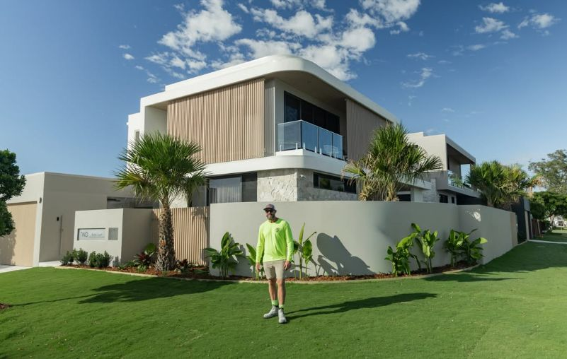
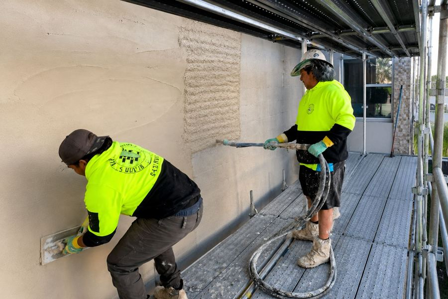

Second-generation plasterer. 15+ crew. One standard.
Coastside is Steve’s business: a solid plastering and render crew working for builders, architects and designers from Byron Bay to South East Brisbane.

Built on experience. Backed by scale.
From a second-generation plasterer to running a 15+ crew, Steve and the team deliver high-quality finishes across residential and commercial projects every week.
From architectural coatings to large-scale commercial pumping, it is the same standard every time: clean finishes, reliable crews and jobs completed on time.
The work runs from high-end homes to multi-site commercial projects, from Byron Bay to the Gold Coast to South East Brisbane. The focus stays the same.
Projects completed: number to confirm
Why builders use Coastside
Crew depth
15+ qualified plasterers, enough to run more than one site without stretching a crew thin.
Commercial capability
The people and the pump for multi-storey and commercial facades, without dropping the finish.
Residential detail
Architectural coatings, Venetian plaster and feature walls for high-end homes.
Straight answers
Clear pricing, agreed start dates and crew numbers you can plan around.
On the tools



Byron Bay to South East Brisbane
Based on the Gold Coast, working across three regions.
| Northern Rivers NSW | Byron Bay and the Tweed confirm areas and NSW licence |
|---|---|
| Gold Coast | Gold Coast and hinterland |
| South East Brisbane | suburbs to confirm |
How a job runs with Coastside
Send the plans
Drawings, elevations and the finish spec. A Dropbox or Google Drive link is fine.
Get an itemised quote
Priced to your spec and your program. Turnaround to confirm.
Lock in the program
Start dates and crew numbers agreed before we mobilise, so you know who is on site and when.
Finish and hand over
Walk-through with your site manager and defects closed out before we leave confirm.
Pricing a job? Send the plans.
Tell us the project, the finish and the program. We come back with an itemised price.